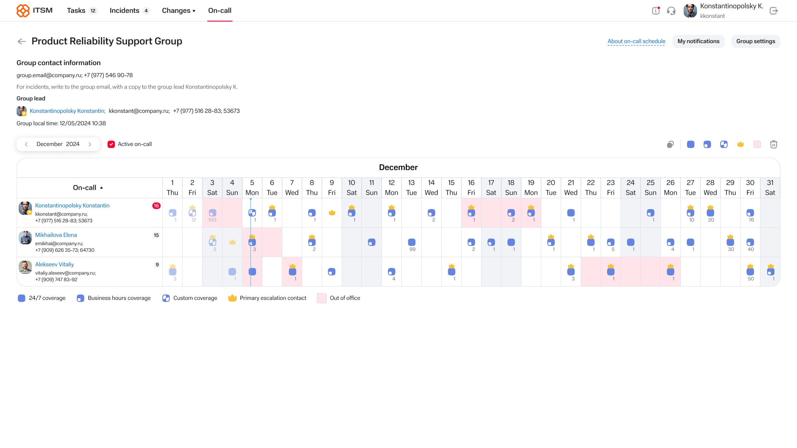
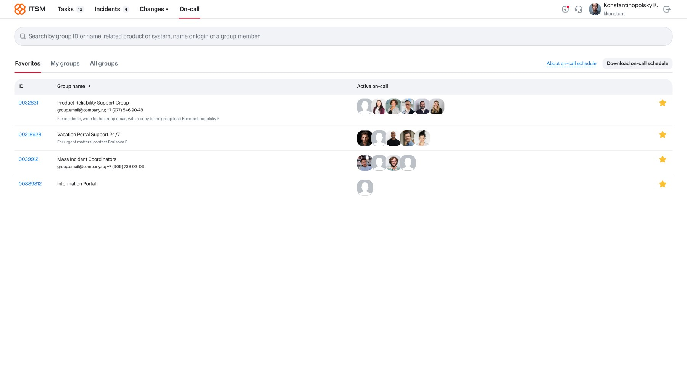
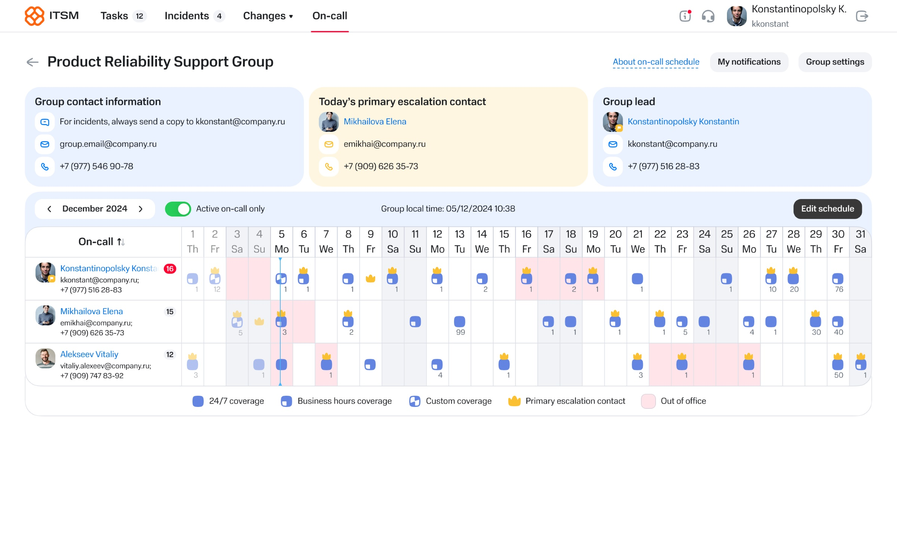
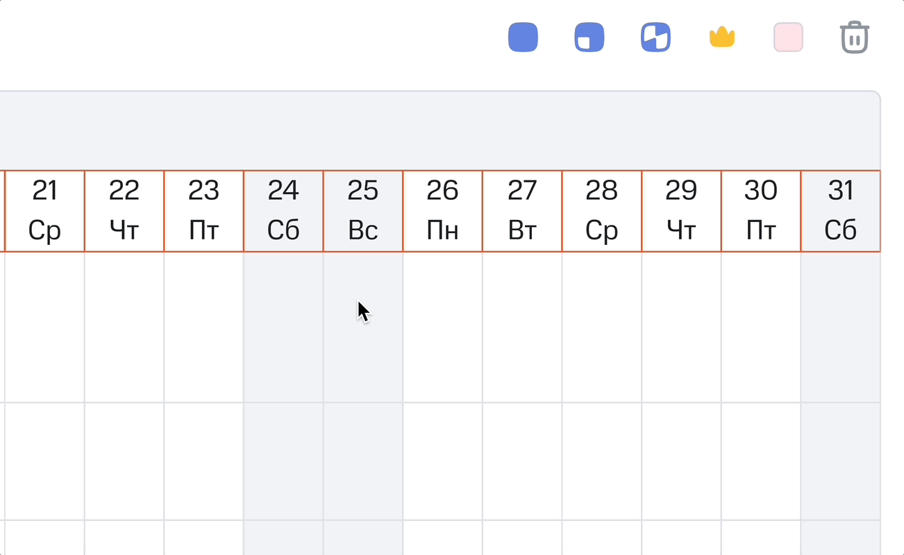

Project overview
- My role
- Sole Product Designer
- Scope
- End-to-end redesign of on-call scheduling, integrated into an enterprise ITSM platform.
- Key challenge
- Migrating a mature scheduling workflow used across 11 time zones without disrupting familiar team habits.
- Outcome
- NSAT rose from 69% to 75%, and monthly active users grew 51% after launch.
Context
Our ITSM platform was used by support teams to manage incidents and operational workflows. However, on-call scheduling still lived in a separate legacy product, creating a fragmented experience across tools. The goal was to bring scheduling into the ITSM platform while preserving familiar workflows for existing users.
Problem
The legacy scheduling tool was widely adopted but difficult to maintain and increasingly disconnected from the broader ITSM ecosystem. Users had to switch between systems to manage related operational tasks, and the scheduling experience had accumulated unnecessary complexity over time.
Users
The scheduling system was used by support engineers, incident coordinators, and support team leads, with different responsibilities and permissions across roles.
My Role
Sole product designer responsible for end-to-end redesign and integration of a legacy on-call scheduling workflow into an enterprise ITSM system, working under strict functional parity and system constraints.
Design Challenges
- Preserving familiar workflows while integrating scheduling into the ITSM platform
- Supporting multiple user roles with different permissions and responsibilities
- Maintaining functional parity with the legacy system while reducing unnecessary complexity
Key Design Decisions
01 — Multi-timezone scheduling
Support engineers were distributed across 11 time zones. The key design question was whether schedules should be displayed in each user's local time or in a single shared time zone.
We introduced Group Local Time as a single source of truth. I designed the interface to keep this context consistently visible, helping teams coordinate shifts without time zone ambiguity.
02 — Seamless migration
Migrating a mature workflow from a legacy system to the ITSM platform required minimizing both technical and cognitive disruption.
Although Gantt-based scheduling is common in similar products, user research showed that existing teams were comfortable with the current scheduling model. Rather than introducing a familiar industry pattern, we preserved users' mental model and focused on simplifying the existing workflow.
Process
01 — Understand existing workflows
Interviewed support teams to understand how schedules were created, maintained, and validated. Identified pain points and opportunities for simplification while preserving familiar workflows.
02 — Validate concepts
Iterated on design solutions with users and stakeholders. Released incrementally and refined the experience based on feedback.

03 — Ship under a hard deadline
The project had roughly 4 months for research, design, validation, and development. To hit the release date, I worked directly with backend engineers throughout the design process — several interaction decisions shaped the data structure they were building in parallel, so we made those calls together rather than handing off a finished spec. The MVP shipped on time; less critical customization features followed in a calmer second phase after launch.
Solution
The new scheduling module became part of the existing ITSM platform.
Key improvements included:
- Simplified scheduling and editing flows
- Removal of outdated and rarely used functionality
- New customization capabilities
- Improved visibility of schedules and team coverage
- Consistent UX aligned with the rest of the platform



Outcome
The redesigned experience was successfully adopted by support teams across the organization.
Results
+6 points
69% → 75%
NSAT
+51%
2,987 → 4,500
MAU
- Positive user feedback highlighted improved usability
- Additional teams adopted the scheduling module after launch
- Improved consistency between scheduling and incident management workflows
Note: metrics reflect platform-level analytics rather than the scheduling module in isolation.
Future Improvements
As the product evolved, the team header accumulated additional functionality, increasing information density. In a future iteration, I'd simplify the header to keep the schedule visible without scrolling on smaller laptop screens.